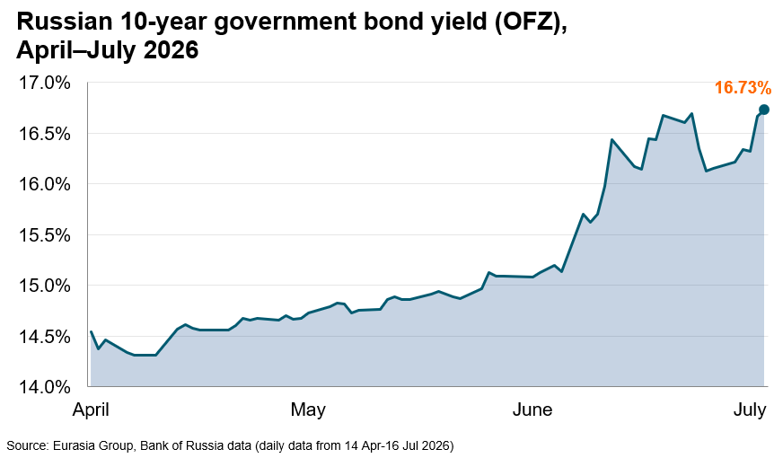
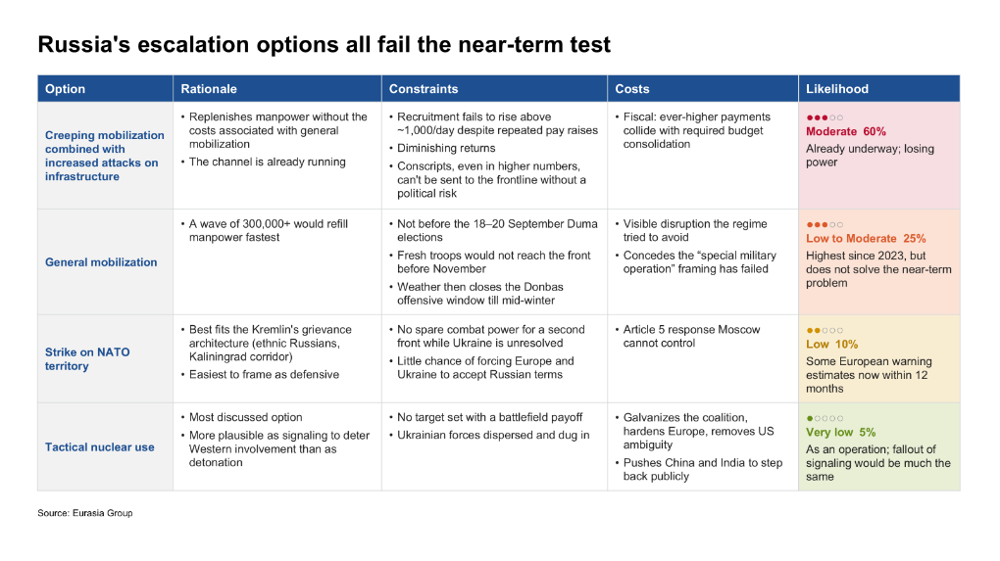

|
 |
|||
|
||||
|
||
Fiscal pressures are mounting, but are likely to ease later in the year due to inflation. On Monday, the Ministry of Finance (Minfin) postponed its debt auctions until further notice to “calm the markets” amid rising yields. Anticipated higher fiscal revenues and amassed reserves give the ministry a breathing space despite higher spending. The 2026 budget provides for a full-year deficit of 3.786 trillion rubles, or 1.6% of GDP. The government blew through that ceiling by May and may not hold to the new 4.8-trillion-ruble estimate either. Most extra spending is earmarked for the war. Finance Minister Anton Siluanov has warned that the military needs an additional 2 trillion rubles by year-end, largely for casualty compensation rather than equipment. Meanwhile, a strong ruble and Ukrainian refinery strikes have offset the Iran-war oil-price bump, leaving oil-and-gas revenues barely above early-2025 levels—and triggering a fuel crisis that is adding to public pressure and emergency budget costs. Non-oil revenue looks brighter, as inflation lifts nominal tax receipts. Yet, the windfall is likely to last only until indexed payments catch up next year—still not enough to close the growing hole. The finance ministry can still borrow, albeit at a higher cost. In early June, the parliament passed a law allowing the Minfin to exceed budgeted spending and the statutory debt ceiling without approval, although such borrowing is capped by the treasury joint account. This is an estimated 5–6 trillion rubles, which the government draws on when it fails to place debt at an acceptable rate. Rising yields will make this borrowing more expensive. On 19 June, the Central Bank of Russia cut the key rate by only 25 basis points (bp), to 14.25%, against expectations of 50 bp, warning that “stimulative” fiscal policy will require higher rates over the three-year horizon. Ten-year OFZ yields, the backbone of government borrowing, moved above 16% the next day, hitting 16.2–16.7% in early July. Since then, at least two bond auctions have failed for lack of acceptable bids; on 1 July, Minfin placed only 10% of the bonds on offer.  Moscow will reduce spending except on defense and social policy. These categories are protected by law; to avoid other cuts before the September parliamentary elections, Moscow is financing the war by surreptitiously squeezing non-military sectors. In May, Siluanov asked the cabinet to freeze 2.9 trillion rubles of planned 2026 spending, cutting every category except social and defense outlays. There is little space for tax increases, given a near-recession in non-military sectors. Regional governments’ loan repayments to the federal budget were pushed out to 2030, freeing regional cash for war-adjacent spending. All of these maneuvers amass funds in the treasury account Minfin can use this year to close the gap. While Russia can manage this year, the 2027-2028 outlook is genuinely troubled. Emergency borrowing, spending freezes, and a treasury overdraft are still just large enough to cover the gap and leave Putin with some breathing room. Debt markets will not strongarm him into de-escalation as they might in a less autocratic country. Putin can keep doing what he prefers in a crisis: carry on without deciding anything. Next year, however, the National Wealth Fund and the treasury account will offer less of a cushion, and none of the current tricks scale indefinitely, as payouts would need to be adjusted for inflation. The fiscal squeeze, compounded by Ukrainian strikes on oil infrastructure and frontline losses outpacing recruitment, could push Putin toward action. The Kremlin's best option is ending hostilities promptly on its terms—possibly through escalation. However, none of Russia’s escalation options can fix the underlying problems on a timeline that matters for this year’s fighting. Creeping mobilization is losing steam: contract signings hit a three-year low in the first quarter, and higher bonuses would further strain the budget with diminishing returns. A true general mobilization could rebuild manpower faster, but as we noted earlier in July, the political costs would be significant given the September Duma elections and the fallout from the 2022 mobilization. Even if declared after the elections, fresh forces would not arrive before winter closes the Donbas offensive window. Tactical nuclear use offers little battlefield payoff against dispersed, dug-in Ukrainian units and would galvanize the coalition Moscow hopes to fracture. A probe against NATO territory would open a second front, which Russia lacks the combat power to sustain, while carrying severe escalation risks. That leaves intensification of the campaign already underway: stepping up the creeping partial mobilization amid heavier strikes on Ukrainian cities and infrastructure to break Ukraine’s economy and civilian morale. But this strategy runs on the same clock as the budget problem. Putin is betting that Western or Ukrainian resolve cracks before Russian financing does, with no strong evidence that either will.  |